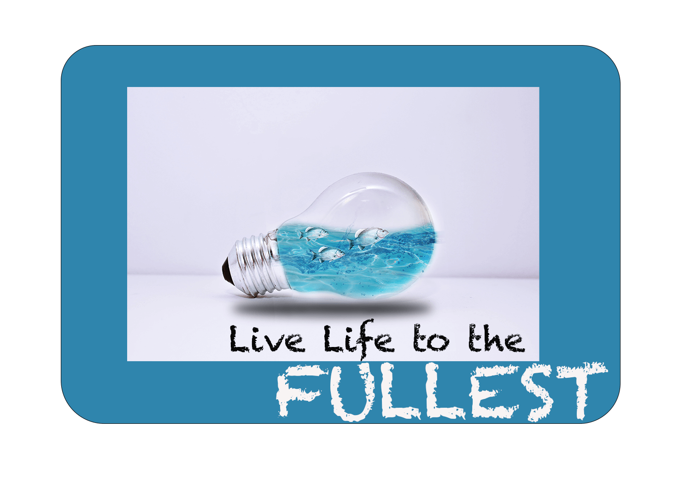

Original ImageImage Credit: Photo by Maria olova- (Pexel)
Manipulated ImageManipulated by Daniella Achonu
Harmony in Contrast
This captivating image explores the intersection of nature and humanity through the
innovative use of the double-exposure effect. In the foreground, a serene woman's portrait exudes
tranquility and introspection, her features blending seamlessly with the surrounding environment.
Behind her, a winding road stretches into the distance, symbolizing the journey of life and the paths we
choose to follow.
The juxtaposition of the woman and the road creates a striking contrast, yet their
fusion evokes a sense of harmony and interconnectedness.
This manipulated image demostrates a visually compelling composition that invites viewers to contemplate
the relationship between humanity
and the natural world.
Original ImageImage Credit: Photo by Chris Barin-Behance
Manipulated ImageManipulated by Daniella Achonu
Craftsman's Focus
This evocative image captures the essence of craftsmanship with a poignant focus on the
potter and his artistry.
Against a backdrop of a blurred brick wall, the potter's hands delicately mold the clay, each movement a
testament to skill and dedication.
Through the subtle use of the blur effect, the background recedes into a soft haze,
directing the viewer's gaze squarely onto the potter and his work.
The intentional blurring serves to heighten the sense of concentration and intimacy,
inviting viewers to witness the creative process unfold with clarity and depth.
It's a visual ode to the mastery of craft and the singular focus that drives artisans
to transform raw materials into objects of beauty and utility.
Urban Dreamscape
In this poignant image, the viewer is drawn into the inner world of a city worker
whose longing for nature is palpable. Against the backdrop of a bustling cityscape,
the man's gaze is fixed on the distant horizon, his expression a mix of introspection and yearning.
Through manipulation, the towering silhouette of a mountain emerges in his head,
its majestic peaks a stark contrast to the urban landscape. The comparison of the man's
contemplative stance and the rugged grandeur of the mountainscape evokes a profound sense of longing and
escape.
It's a visual narrative of a soul tethered to the concrete jungle yet
yearning for the untamed beauty of the natural world.
As viewers, we're invited to ponder
the universal human desire for connection with the wilderness,
even amidst the relentless pace of urban life.
Original ImageImage Credit: Photo by Spencer Selover- from Pexel
Manipulated ImageManipulated by Daniella Achonu
The Oceanic flow
This mesmerizing image seamlessly merges the graceful beauty of a woman with the dynamic
energy of the
ocean.
Through intricate manipulation using blending effects in Photoshop, the woman's long hair is transformed
into undulating waves, mirroring the fluid motion of the sea. Each wave cascades elegantly around her,
intertwining with her form in a captivating dance of nature and femininity.
The ocean's rhythmic movement imbues the image
with a sense of serenity and vitality, while the woman's presence adds a touch of human grace and poise.
This stunning composition invites viewers to immerse themselves in the harmonious blend of elements,
where the boundaries between land and sea, body and environment, dissolve into a seamless union of
beauty.
Original ImageImage Credit: Photo by Jan Kabili
Manipulated ImageManipulated by Daniella Achonu
Illuminate Your Journey
In this thought-provoking image, the familiar symbol of a light bulb is transformed into a
portal to
another realm.
Within its glass confines, three graceful fish navigate the depths of an oceanic expanse, their
movements echoing the
fluidity of life itself. Encased within a frame bearing the empowering mantra, "Live life to the
fullest," the
image serves as a poignant reminder of the boundless opportunities that await those who dare to
explore beyond
the confines of the ordinary. Through skillful manipulation, the mundane is imbued with a sense of
wonder and
possibility, urging viewers to embrace curiosity, adventure, and the pursuit of their dreams.
It's a visual metaphor for the transformative power of illumination,
inspiring us to illuminate our paths with courage, purpose, and a thirst for discovery.
Original ImageImage Credit: Dids (Pexel)

Manipulated ImageManipulated by Daniella Achonu
Meltdown of Emotions
This striking image captures the intense emotion of anger, as a man reaches his boiling
point
during a heated phone conversation.
In the original image, his furious expression and aggressive posture convey his frustration.
Through the creative use of the 'liquify' effect in Photoshop, the manipulated version depicts
the man seemingly melting,
his features distorted by the overwhelming force of his emotions. It's a visceral portrayal of
the destructive power of unchecked anger,
as the man's very essence seems to dissolve under the weight of his rage. This evocative image
serves as a stark reminder of
the importance of managing emotions before they consume us entirely,
lest we too become victims of our own fiery tempers.
Original ImageImage Credit: Photo by andrea-piacquadio- Pexel
 Manipulated Image
Manipulated by Daniella Achonu
Manipulated Image
Manipulated by Daniella Achonu